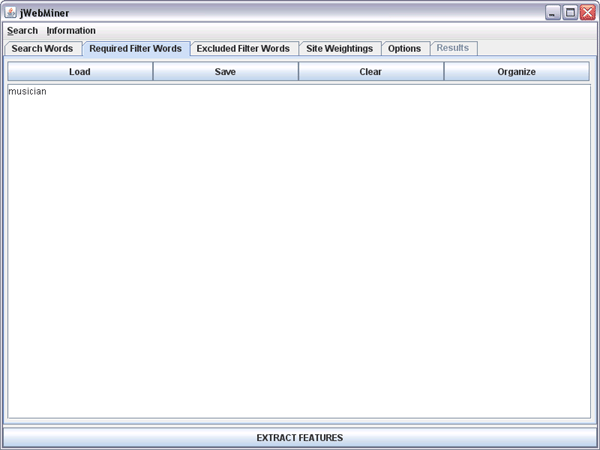
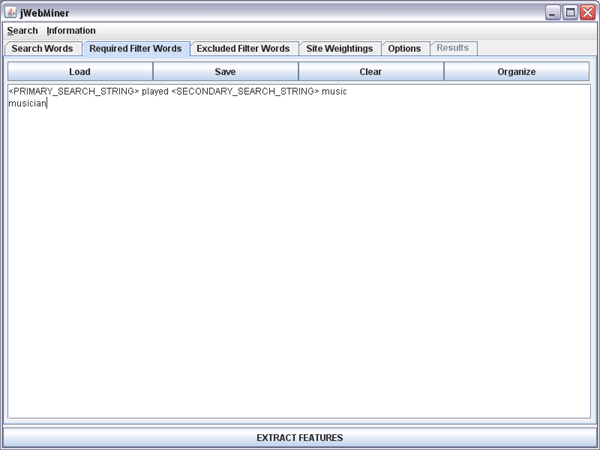

| Required Filter Words Panel |
|---|
The Required Filter Words Panel is a GUI panel allowing users to enter strings that must be found on a site in order for it to be counted as a hit during feature extraction. These strings are in addition to search strings entered in the Search Words Panel themselves, and these required filter strings apply to all searches. Both basic and pattern-based filter phrases may also used (see the Pattern-Based Filter Strings section below). A screenshot of this panel is shown in Figure 1 with one filter string entered.
Required filter strings are useful in eliminating hits that are not relevant to the particular topic for which cultural features are being extracted. For example, it may be useful to require that all hits contain the word "music" in order to ensure relevance to a musical feature extraction. Filter words entered in this panel play the opposite role of filter words entered in the Excluded Filters Words Panel.
Note that required filter strings are treated literally in queries regardless of the setting of the Treat search strings literally option in the Options Panel. This means that all of the words in a filter string must appear on a site in the same order as they appear in the filter string for the site to be counted as a hit. For this reason it is unwise to use long filter strings that may disqualify many relevant sites.
Choosing required filter strings involves carefully striking a balance between eliminating as many irrelevant hits as possible and including as many relevant hits as possible. Too many filter words or filter words that are too limiting will have a negative impact on feature values.
.
Figure 1: A screenshot of the Required Filter Words Panel with one basic filter string entered.
Pattern-Based Filter Strings
Filter strings may be either "basic filter strings" or "pattern-based filter strings". In the case of basic filter strings, such as in "musician" in Figure 1, the filter strings are included in queries exactly as they are, without modifications. The line "<PRIMARY_SEARCH_STRING> played <SECONDARY_SEARCH_STRING> music" in Figure 2 is an example of pattern-based filter string. Pattern-based filter strings are useful when filter phrases are desired that should include the particular search strings being used in each individual query.
Pattern-based filter strings are those strings that include one of more occurences of either of the following two tags: "<PRIMARY_SEARCH_STRING>" or "<SECONDARY_SEARCH_STRING>". When such a tag is present, the tag is replaced in each query by the search string from the Search Words Panel that is relevant to the query currently taking place.
Recall that each query submitted by jWebMiner involves two search strings from the Search Words Panel. In the case of co-occurrence analysis these will both be from the PRIMARY SEARCH STRINGS section of the Search Words Panel and in the case of a cross tabulation analysis the first will be from the PRIMARY SEARCH STRINGS section of the Search Words Panel and the sedond will be from the SECONDARY SEARCH STRINGS section of the Search Words Panel.
The "<PRIMARY_SEARCH_STRING>" and "<SECONDARY_SEARCH_STRING>" tags are therefore replaced by the corresponding search string from the Search Words Panel for each query. For example, consider the case where the"<PRIMARY_SEARCH_STRING> played <SECONDARY_SEARCH_STRING> music" filter string is used and the search queries are the same as in Figure 2 of the Search Words Panel section of this manual. Then, for the query involving "Beethoven" and "Jazz", for example, the specific filter string submitted to web services would be "Beethoven played Jazz music", for the query involving "Beethoven" and "Classical" the filter string submitted to web services would be "Beethoven played Classical music", and so on.
In the case of co-occurrence analyses, the "<SECONDARY_SEARCH_STRING>" tag is actually replaced by the second primary search string from the PRIMARY SEARCH STRINGS section of the Search Words Panel for each query. For example, consider the case where the "<PRIMARY_SEARCH_STRING> played <SECONDARY_SEARCH_STRING> music" filter string is used and the search queries are the same as in Figure 1 of the Search Words Panel section of this manual. Then, for the query involving "Beethoven" and "Mozart" the filter string submitted to web services would be "Beethoven played Mozart music", and so on (which also demonstrates that this particular filter string is less appropriate for artist similarity analysis than for musical genre classification).
Note that if synonyms are present in the Search Words Panel then only the first synonym is used to replace the <PRIMARY_SEARCH_STRING> or <SECONDARY_SEARCH_STRING> tags.

Figure 2: A screenshot of the Required Filter Words Panel with one pattern-based filter string and one basic filter string entered.
The Text Area
The text area dominating this panel allows users to enter the filter terms that they wish to use. These may be entered by directly typing in or editing the text area or by copying and pasting existing text into it. Text may also be added using the Load button, which parses strings from an existing text file and appends them to the text area.
Note that each filter string may contain multiple words and that each line corresponds to a separate filter string.
Note that when a feature extraction is executed with the EXTRACT FEATURES button that the contents of the text field are pre-processed before being used in queries such that blank lines are removed, duplicate lines are removed and the contents are sorted alphabetically by line.
Buttons Above the Text Area
The Load button allows users to parse the contents of a text file and append them to the existing content of the text area (existing contents are not replaced). Each line in the text file is treated as a separate filter string.
The Save button will bring up a file chooser allowing users to enter a file path. The contents of the text area will be saved as a text file to the chosen location.
The Clear button erases all of the contents of the text area.
The Organize buttons causes the contents of the text area to be sorted alphabetically by line, with empty lines and duplicate lines removed.